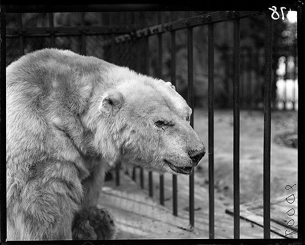

The trouble with Bears
By Evan Wild,
Tall, lumbering, angry, dangerous. The real live bears of this world are proud, independent creatures,
self-serving and always on the hunt for food. Nothing like the bears you see on TV,
like Baloo from renowned documentary, The Jungle Book.
So what are bears really like, and why does the world's media portray them with such a skewed vision?
In this article we try to answer those questions, and give you a real insight into the life of the bear.
Types of bear
Bears come in two varieties — large and medium. You don't get small bears. If you have seen a small bear, then it was in fact probably a baby bear (cub) from another species. Bears can also be classified in terms of their habitat — both large and medium bears are just as at home in urban areas as they are in the countryside. Different habitats encourange different behaviour however, as you'll find out below. The below table also gives you some useful facts about bears.
| Bear Type | Coat | Adult size | Habitat | Lifespan | Diet |
|---|---|---|---|---|---|
| Wild | Brown or black | 1.4 to 2.8 meters | Woods and forests | 25 to 28 years | Fish, meat, plants |
| Urban | North Face | 18 to 22 | Condos and coffee shops | 20 to 32 years | Starbucks, sushi |
Habitats and Eating habits
Wild bears eat a variety of meat, fish, fruit, nuts, and other natually growing ingredients. In general they will hunt for food themselves in woodland or rivers, but at a push they will track down their sustenance from farms or country houses. They tend to live in relative isolation, in caves, tents, or cottages.

Urban (gentrified) bears on the other hand have largely abandoned the old ways. They will hunt other urban creatures if necessary (including other predators like rats and foxes), but prefer to scavenge from readily available urban food outlets like dumpsters, bins, and fast food joints. When food has proven scarce, urban bears have even been known to break into people's kitchens and steal essentials like baked beans, ready meals, and microwave ovens.

Urban bears will sleep anywhere they can, from bus shelters and parks, to the toilets in McDonalds, to their own apartment.
Mating rituals
Bears are romantic creatures by nature, and will naturally look for a mate that they can spend the rest of their lives with. They will woo a potential suitor by making their dwelling look attractive — for example with cave paintings or a bed of reeds in the case of a wild bear, and mood lighting and a Michael Bublé CD in the case of an urban bear.
The following audio clip contains a fact file providing more details about bear mating rituals, along with samples and quotes from experts.
Transcript
"This isn't really an audio fact file about bears, but it is an audio file you can transcribed."
Add comment
Comments
Bob Fossil
Oh I am so glad you taught me all about the big brown angry guys in the woods. With their sniffing little noses and their bad attitudes, they can sure be a menace — I was thinking of putting them all in a truck and driving them outta here. I run a zoo, you know.